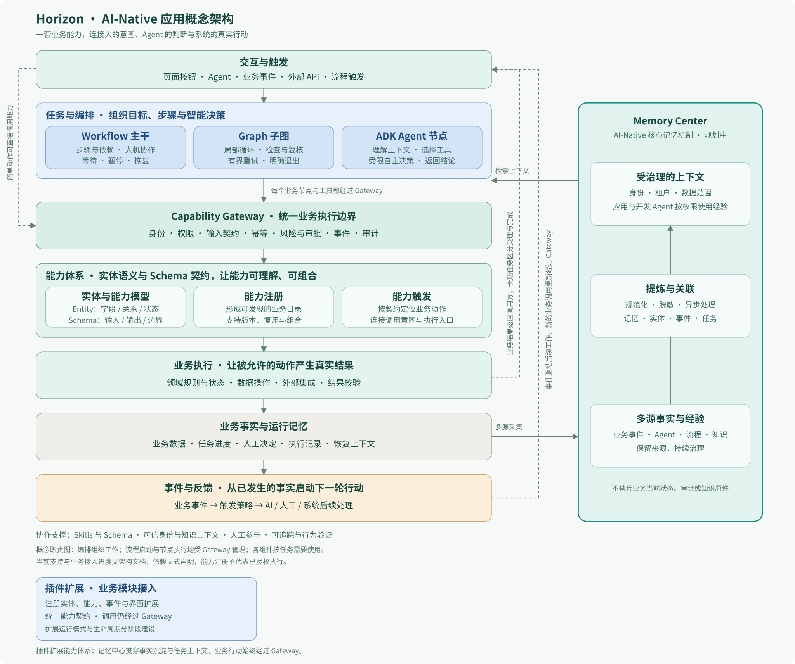
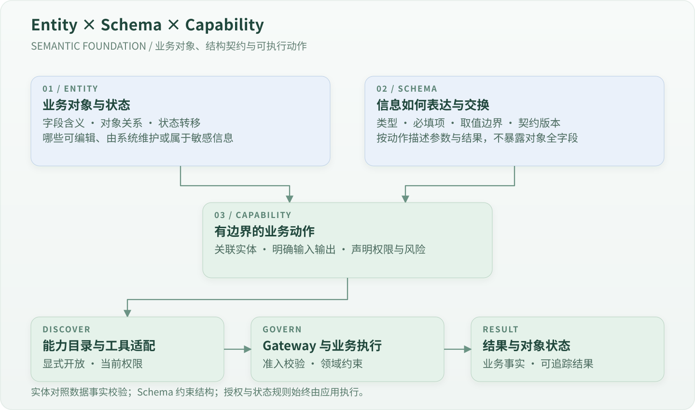
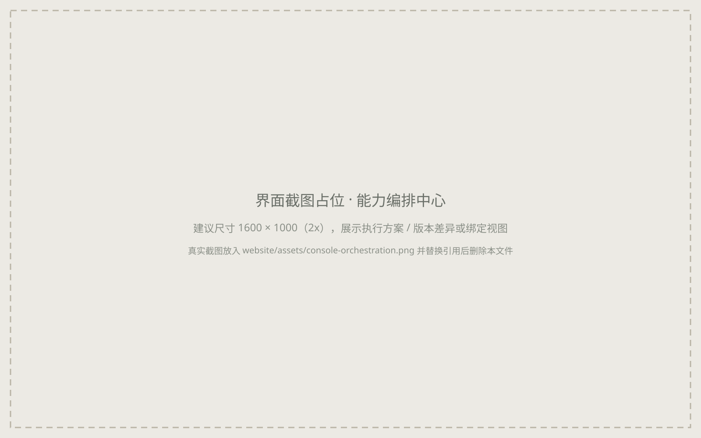
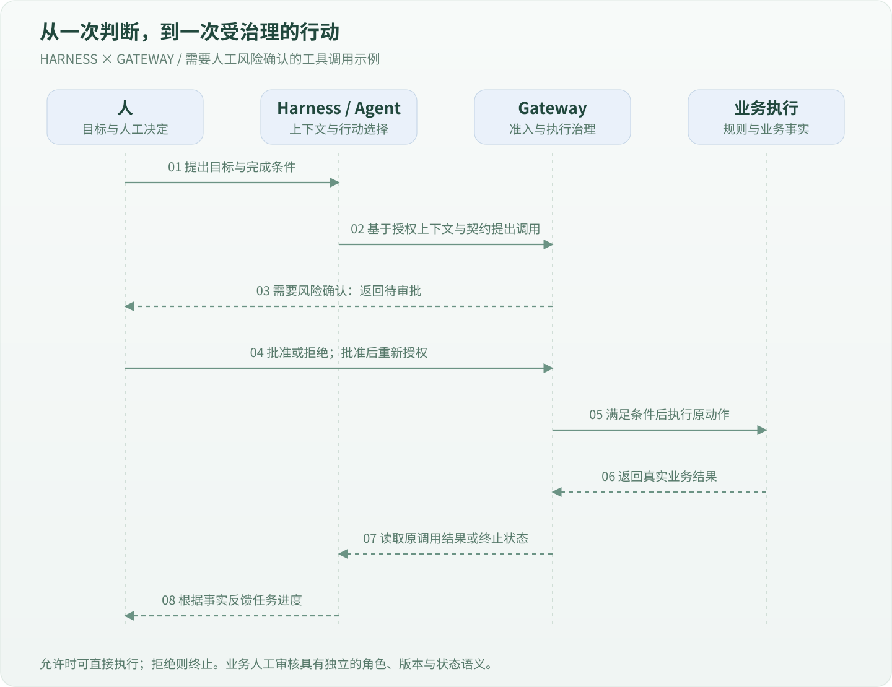
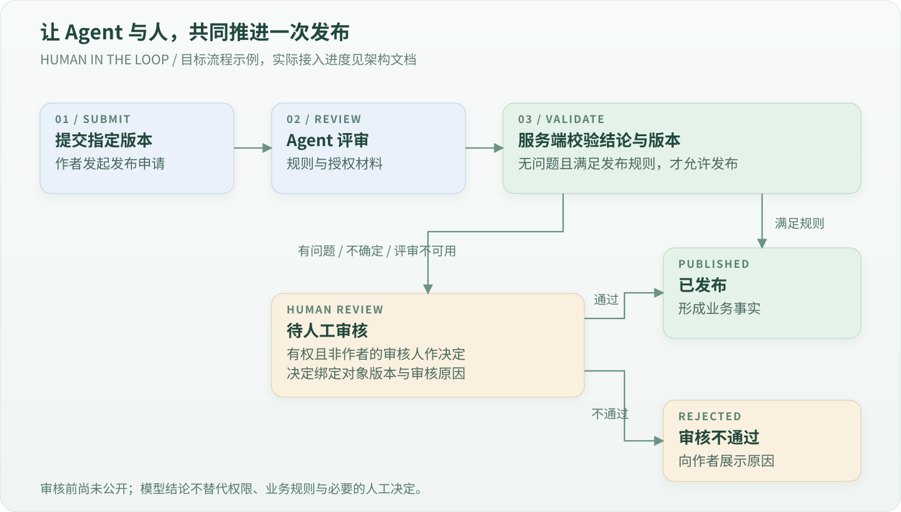
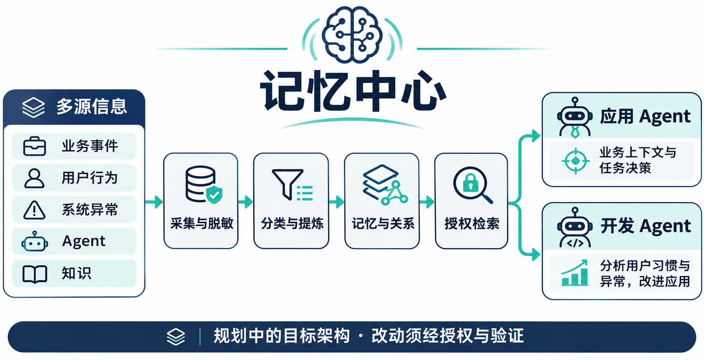
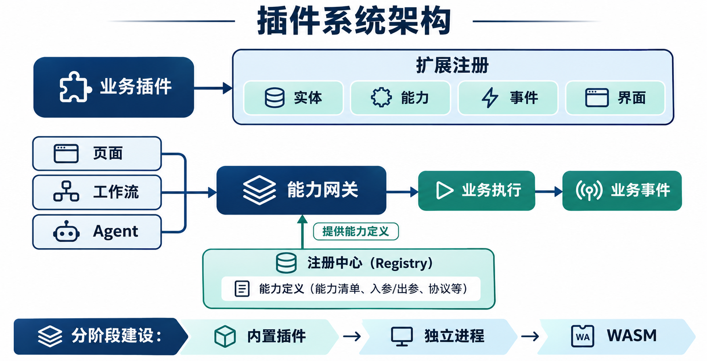

能力与 Gateway：业务动作的单一契约
Capability 表达一个有边界、可执行的动作——查询订单、提交文章、确认收货或归档记录。一项能力说明它处理什么对象、接受什么输入、产生什么结果，以及谁可以执行、有什么风险。页面、Agent 和流程复用这份契约，避免为不同入口建立不同的业务规则。

- 声明即契约：能力在模块
Entries()中声明名称、版本、输入/输出 Schema、权限、风险、审批、幂等、成功事件与编排元数据（Layer / Kind / Reads / Writes）。 - 唯一业务写入口：
/api/capabilities/{name}/invocations，业务模块不再各自暴露 REST 端点。 - 能力互调走 Gateway：编排能力调用数据能力必须经
gateway.Invoke，禁止绕过能力直接访问数据库或领域服务；能力边界即事务边界。
实体、Schema 与能力：AI 理解和行动的共同基础
Entity 描述业务世界里有什么，Schema 描述信息如何表达，Capability 描述可以对它做什么。三者共同构成框架的业务语言：Agent 据此理解对象、准备参数和识别结果，应用依据真实权限与业务约束执行动作。

- 实体：表达字段的业务含义、对象关系、状态与允许的状态变化；实体声明由
kernel/metadata对照数据库迁移校验（make check-entities），防止语义与数据漂移。 - Schema：覆盖能力输入输出、流程规格、接口传输与实体模型四个视角，为代码生成与兼容性检查提供依据。
- 组合而非重写：一个实体可被多个能力操作；开发新功能优先发现和复用已有能力。
执行方案与能力编排中心
Capability 定义业务动作，Execution Plan 定义该动作的执行方式，Binding 选择新调用使用的已发布方案。同一个能力入口可以从原生执行切换到受控编排，而页面、Agent 和 API 继续使用原能力契约。
- 默认执行：新能力自动拥有平台 Direct V1，简单功能无需手工建方案。
- 版本生效受控：草稿校验、发布与绑定分别进行；发布不自动生效。回滚只影响新调用，已受理的调用和审批继续固定原方案。
- 管理入口：业务能力目录 → 执行方案，按独立正式权限访问；支持注册实现搜索、编译图、版本差异、结构预检、绑定历史和本人节点轨迹。

Workflow、Graph 与 Agent 如何配合
三者均使用 Eino，各司其职：
- Workflow 组织业务主干：明确步骤与依赖，承载长任务的等待、暂停与恢复。
- Graph 处理局部循环：表达有边界的检查、复核和重试，明确何时继续、何时退出。
- ADK Agent 完成受限决策：结合上下文从允许的工具中选择行动，完成需要判断与探索的任务。
任务按需选择组件，简单动作无需强制进入完整流程。模型提出的判断仍需接受业务规则和执行政策的校验；完整示例见 编排示例文档。
Harness：Agent 工作的环境
Harness 组织模型、上下文、可用工具、执行预算与任务生命周期，让模型的判断能够进入应用的实际工作过程。工具连接业务能力，知识提供参考，执行结果成为后续判断的依据。

工具范围、迭代次数和可见上下文都需要明确配置，使自主性与责任边界一起扩大。
人始终可以参与工作
AI 判断、风险确认与业务人工审核是不同环节。框架将人的决定纳入任务过程：谁可以审核、审核哪一版对象、为什么通过或驳回，都应有清晰边界。

Agent 负责理解、调查与在允许范围内选择行动；应用与流程负责权限、约束、状态迁移与记录；人设定目标、补充信息并承担需要判断与批准的决定。Agent 不能批准自己的权限。
Memory Center：让经验成为受治理的上下文
Memory Center 从业务事件、能力调用、Agent 与流程运行、知识系统等来源采集信息，经过规范化、敏感信息过滤和异步提炼，将有长期价值的经验关联到实体、事件和任务，供后续检索与决策使用。

- 记忆不替代业务数据库的当前状态，不授予执行权限；检索必须遵守租户、身份和数据范围。
- 自动提炼、向量检索与自动清理按实施计划逐步接入。
插件：以统一契约扩展业务
插件架构将业务模块的实体、能力、事件和界面扩展接入框架，使 Core 聚焦通用治理，业务模块保有自己的规则和数据边界。插件提供的能力仍只有一份契约，统一经过 Capability Gateway。

设计上先建设 Go 内置插件与前端扩展注册，再按需评估独立进程和 WASM；不同运行模式需要各自的权限、隔离、版本和生命周期治理。
企业应用基础
框架提供身份与权限、组织和账号、配置治理、字典、文件、通知、国际化及统一界面基础，并以 React / TypeScript、Go / Goa、PostgreSQL 和 Eino 承载实现。
- 权限模型：活跃角色权限合并，账号独立允许/拒绝与六类数据范围；操作授权由 Casbin 决策，SQL 强制数据范围与工作区隔离。
- 会话安全：8 小时 HttpOnly cookie，写请求校验 Origin + CSRF；密码使用 Argon2id；公网部署要求 HTTPS。
- 国际化：所有用户可见文案走 i18next，en / zh-CN 键集合一致。
- 协作方式：开发阶段有 AGENTS 规则、工程 Skills 与验证门禁；使用阶段有内置助手、MCP / WebMCP 与运行时 Skills。